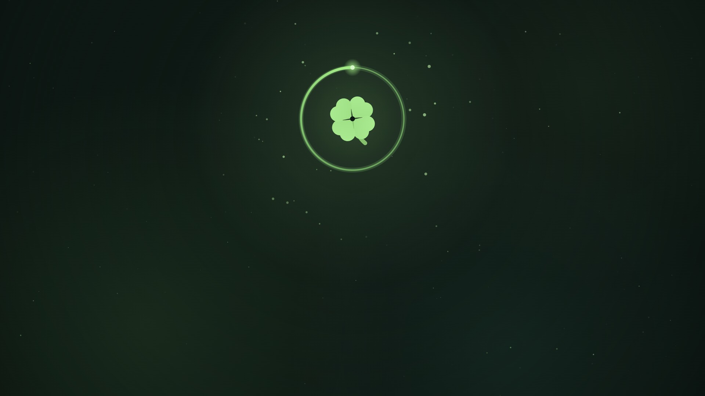
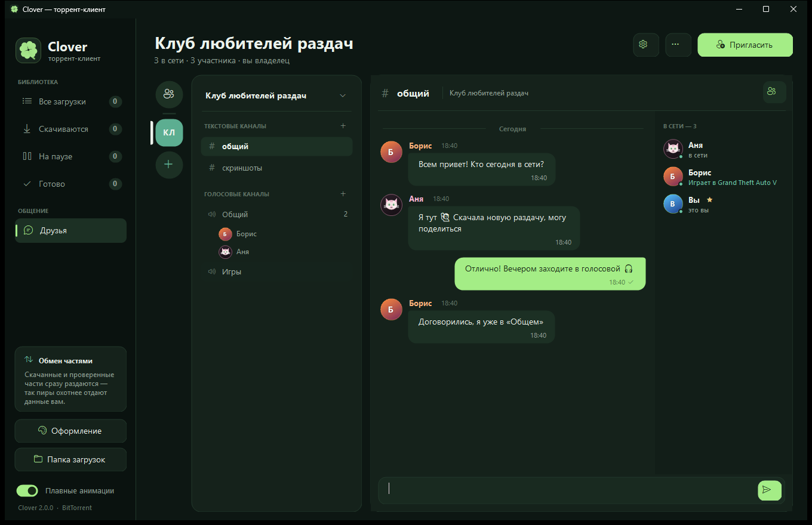
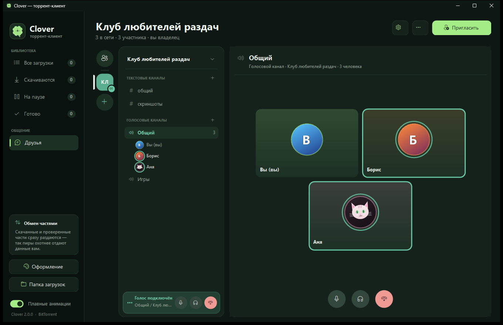
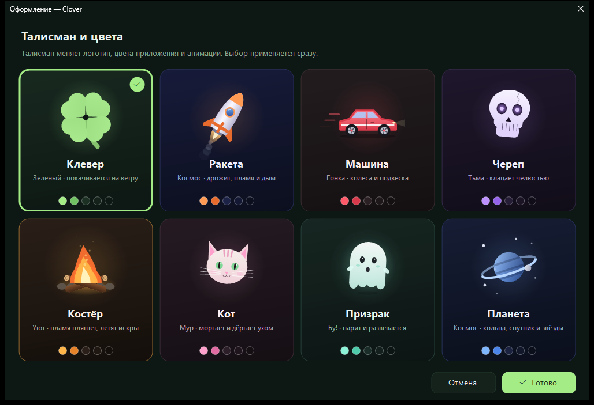

Торренты
.torrent и magnet-ссылки, DHT и трекеры. Скачанные части сразу раздаются — пиры охотнее отдают данные вам.

торрент-клиент
Качайте торренты, переписывайтесь и созванивайтесь с друзьями — в одном окне, без регистрации и рекламы.
Загрузки, друзья, звонки и серверы — там же, где вы качаете торренты. Тёмная тема, плавные анимации и талисман, как на этой странице.

Торрент-клиент, мессенджер и голосовой чат — без серверов посредников: компьютеры друзей соединяются друг с другом сами, через встроенную сеть Clover. Ни VPN, ни настройка роутера не нужны.
.torrent и magnet-ссылки, DHT и трекеры. Скачанные части сразу раздаются — пиры охотнее отдают данные вам.
Отправьте другу свой код — и можно переписываться, даже если у обоих «серый» IP. «Печатает…», отметки о доставке, история на диске.
Текстовые и голосовые каналы для вас и друзей. Участникам не обязательно дружить между собой.
Звук Opus 48 кГц, шумоподавление, рация (push-to-talk) и показ экрана или окна игры до 1920×1080 и 30 кадров — друг видит его прямо в чате.
Перетащите файл в чат. После обрыва передача продолжится с того же места, а SHA-256 проверит, что всё дошло целым.
«В сети», «Не на месте», «Не беспокоить», «Невидимка». Во что вы играете, Clover видит сам — друзья видят «Играет в…».
ECDH P-256 и AES-256-GCM для всего, что идёт между компьютерами. Сообщения на серверах подписаны ключом автора.
Запускается вместе с Windows сразу в трей (можно выключить). Крестик сворачивает в трей: загрузки идут, звонок сам откроет окно. Обновления ставятся сами.
Отправьте торрент другу в чат: вы качаете вместе, и скачанные части идут напрямую друг другу. Папку можно отдать другу как торрент — только ему, с докачкой после обрыва.
Экран или окно игры, 720p или 1080p, до 30 кадров и звук компьютера. Смотрят прямо в окне Clover или на весь экран, а на плитке «В ЭФИРЕ» видна картинка. Плюс оверлей в игре.
Цветные роли видят все — щёлкните по участнику, и откроется его карточка. Модераторы удаляют сообщения, дают тайм-аут, выключают микрофон, перемещают между голосовыми каналами, выгоняют и банят.
@имя, @everyone и роли с подсказкой при вводе, красный счётчик упоминаний и настройка уведомлений сервера. Опросы с голосованием щелчком, «печатает…», голосовые и картинки прямо в чате.
Есть с Clover 2.0, а в 2.5 серверы догнали большие мессенджеры для игр: категории, темы каналов, медленный режим, приватные каналы, значок сервера, @упоминания, опросы, тайм-ауты и баны. Создайте сервер, позовите друзей — и общайтесь без чужих серверов посередине.

В приложении восемь талисманов со своими цветами и анимацией. Попробуйте прямо здесь — сайт перекрасится так же, как Clover.

Один установщик, без прав администратора, .NET уже внутри. Дальше Clover обновляется сам.
CloverSetup.exe, 79 МБ — один файл, в нём программа и всё, что ей нужно.
Clover установится сам и появится на рабочем столе и в «Пуске». Если Windows покажет «Система Windows защитила ваш компьютер» — «Подробнее» → «Выполнить в любом случае»: у программы нет платной подписи.
Clover скачивает новую версию в фоне и ставит её, когда вы выходите из программы. Или сразу, щелчком по карточке «Обновление готово».
Да. Без рекламы, подписок и регистрации. Своих серверов у Clover нет, поэтому и платить за них некому.
С версии 2.2 — нет. В Clover встроена своя виртуальная сеть (на открытом движке ZeroTier), она запускается сама вместе с программой: без установки, драйверов и прав администратора. Когда в карточке профиля появится «Сеть Clover подключена», нажмите «Скопировать код» и отправьте код другу. Если у обоих «серый» IP провайдера, пакеты пойдут через ретрансляторы ZeroTier — медленнее, но работает; всё по-прежнему зашифровано. Обоим нужна версия 2.2 или новее. Общий VPN тоже продолжает работать, если захотите.
С версии 2.3 торрент можно отправить другу прямо в чат: правый щелчок по загрузке → «Скачать вместе с другом». Друг жмёт «Скачать вместе» — и вы оба качаете из раздачи, а уже скачанные части ещё и передаются напрямую между вами через Clover, даже когда у обоих «серый» IP. Папку можно перетащить в чат: Clover сделает из неё торрент только для этого друга — без DHT и трекеров, в интернете её не найти. Друг скачает её любого размера, с докачкой после обрыва и проверкой каждой части. Обоим нужна версия 2.3.
В 2.3 код выглядит как CLV-XXXX-XXXX-XXXX-XXXX-XXXX-XXXX: в нём начало отпечатка вашего ключа (80 бит) и адрес в сети Clover. Этого хватает, чтобы найти вас и проверить, что ответил именно ваш компьютер: при первом соединении Clover сверяет полный ключ. Старые длинные коды тоже работают.
Соединения шифруются (ECDH P-256 + AES-256-GCM), друг подтверждается ключом по коду, переписка хранится на диске зашифрованной средствами Windows. Как в любой прямой связи, собеседники видят IP-адреса друг друга.
Сервер живёт на компьютерах участников. Вступить можно, когда владелец в сети; сообщения доходят до тех, кто в сети, а остальные получают их позже — от любого участника. Роли и модераторы (с 2.3) работают так же: права подписаны владельцем, и каждый участник сам проверяет, можно ли модератору удалить сообщение, выгнать участника, выключить ему микрофон или отключить от голосового канала (последние два — с 2.4). Роли и у кого они есть видят все. С 2.5 модераторы могут дать тайм-аут (от минуты до недели), забанить и переместить участника в другой голосовой канал; сообщения приватного канала уходят только тем, кто его видит. Из голосового канала можно позвонить другу, а друг в звонке услышит второй звонок. Позвонить другу можно, даже когда он сидит в голосовом канале или уже разговаривает с кем-то (с 2.3.2): у него зазвонит, а ответ выведет его из канала или завершит прежний звонок.
Ничего делать не нужно: установленный Clover сам скачивает обновление в фоне и ставит его при выходе (или сразу — щелчок по карточке «Обновление готово»). Если у вас портативный Clover 2.0 или 2.0.1, просто установите CloverSetup.exe: загрузки, друзья и настройки хранятся отдельно, в %LOCALAPPDATA%\ProstoyTorrent, и подхватятся сами.
С версии 2.4 Clover после установки запускается при входе в Windows сразу в трей, без окна: друзья видят вас в сети, а загрузки продолжаются. Выключить — правой кнопкой по значку в трее → «Запускать вместе с Windows» или «Настройки → Уведомления → Запуск». Если выключили, обновления его снова не включат.
Да: звук компьютера для стрима (игра, музыка, видео — без голосов из канала и звонка) Windows отдаёт программам только в Windows 11. В Windows 10 стрим тоже работает, но без звука — Clover об этом скажет. Зрителю для звука нужен Clover 2.4.
«Параметры» → «Приложения» → Clover → «Удалить». Загрузки и переписка при этом остаются на диске.